上节课我们认识了三角形的基本元素。小学时我们通过剪拼发现三角形的三个内角可以拼成一个平角。今天，我们将用严谨的推理证明这一结论，并探索外角的性质。
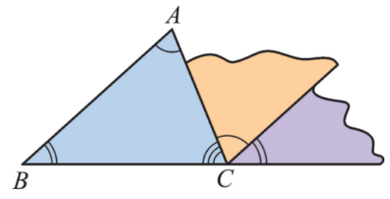
三角形的内角和等于 $180^{\circ}$。
如图，延长 $BC$ 至 $E$，过点 $C$ 作 $CD \parallel BA$，则 $\angle B = \angle DCE$，$\angle A = \angle ACD$。
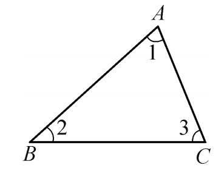
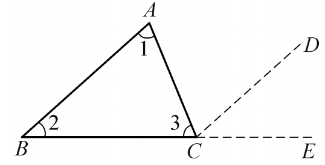
已知：$\triangle ABC$，求证：$\angle A + \angle B + \angle C = 180°$。
证明：
因此，三角形的内角和等于 $180^{\circ}$。
如图8.1.10，在 Rt$\triangle ABC$ 中，$\angle C = 90°$，则 $\angle A$ 与 $\angle B$ 有什么关系？
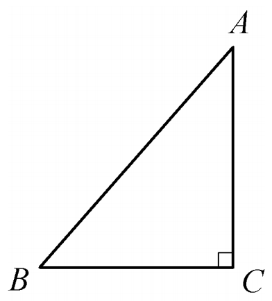
$\angle A + \angle B = 90°$，即直角三角形的两个锐角互余。
有两个角互余的三角形是直角三角形。
如图8.1.11，$AD$ 是 $\triangle ABC$ 的边 $BC$ 上的高，$\angle 1 = 45°$，$\angle C = 65°$。求 $\angle BAC$ 的度数。
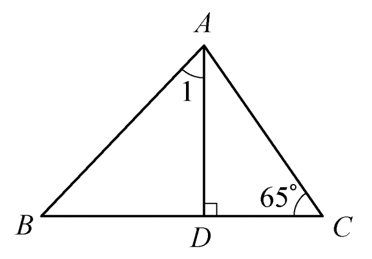
三角形外角的性质：
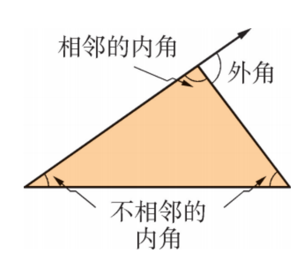
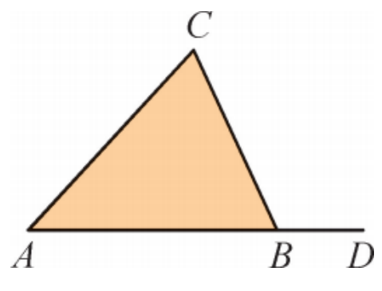
如图8.1.14，$\angle 1 + \angle 2 + \angle 3$ 是三角形的外角和。计算 $\angle 1 + \angle 2 + \angle 3$ 的值。
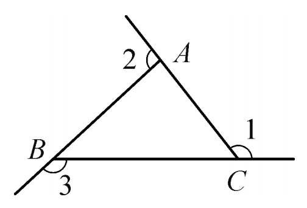
如图8.1.15，$D$ 是 $\triangle ABC$ 的边 $BC$ 上一点，$\angle B = \angle BAD$，$\angle ADC = 80°$，$\angle BAC = 70°$。求 $\angle B$ 和 $\angle C$ 的度数。
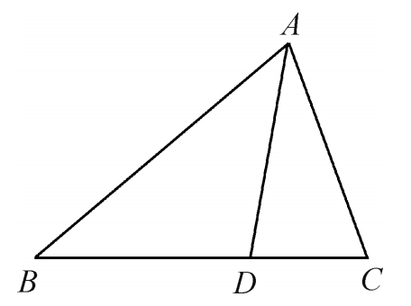
1. 如图，∠A = 40°，则 ∠1 + ∠2 + ∠3 + ∠4 = ______。
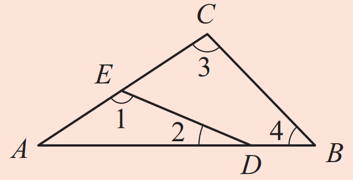
∠1 + ∠2 + ∠3 + ∠4 = 280°
2. 在△ABC中，∠A + ∠B = 80°，∠C = 2∠B。求∠A、∠B和∠C的度数。
3. 在△ABC中，∠B = ∠A + 30°，∠C = ∠B + 30°。求△ABC的各内角的度数。
4. 如图，在Rt△ABC中，∠C = 90°，D、E分别是边CB、AB延长线上的点，∠A = ∠D。试说明△BDE是直角三角形。
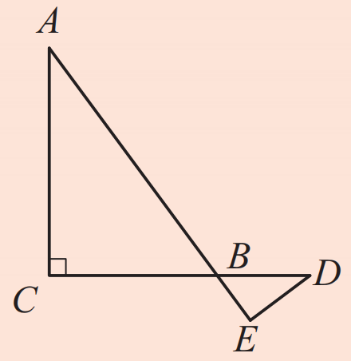
5. （口答）一个三角形可以有两个内角都是直角吗？可以有两个内角都是钝角或都是锐角吗？为什么？
不能有两个直角或两个钝角，因为内角和会超过180°；可以有两个锐角。
6. 说出下列各图中∠1的度数。
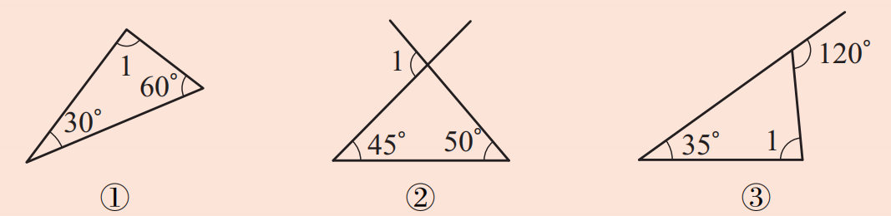
① ∠1 = 90°；② ∠1 = 95°；③ ∠1 = 85°。
7. 如图，在Rt△ABC中，CD是斜边AB上的高，∠BCD = 35°。
(1) 求∠EBC的度数；(2) 求∠A的度数。
对于上述问题，在以下解答过程的空白处填上适当的内容（理由或数学式）。
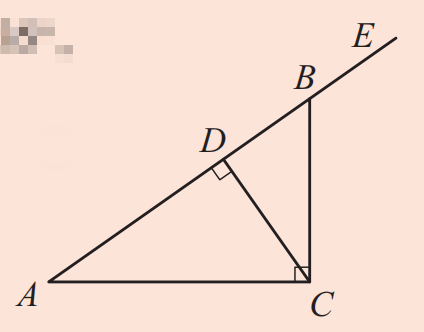
解
(1) ∵ CD ⊥ AB（已知），
∴ ∠CDB = 。
∴ ∠EBC = ∠CDB + ∠BCD（），
∠BCD = 35°（已知），
∴ ∠EBC = + 35° = （等量代换）。
(2) ∵ ∠EBC = ∠A + ∠ACB（），
∴ ∠A = ∠EBC - ∠ACB（等式的性质）。
∵ ∠ACB = 90°（已知），
∴ ∠A = - 90° = （等量代换）。
你还能用其他方法解决这一问题吗？
解（答案）
(1) ∵ CD ⊥ AB（已知），
∴ ∠CDB = 90°。
∴ ∠EBC = ∠CDB + ∠BCD（三角形的一个外角等于与它不相邻的两个内角的和），
∠BCD = 35°（已知），
∴ ∠EBC = 90° + 35° = 125°（等量代换）。
(2) ∵ ∠EBC = ∠A + ∠ACB（三角形的一个外角等于与它不相邻的两个内角的和），
∴ ∠A = ∠EBC - ∠ACB（等式的性质）。
∵ ∠ACB = 90°（已知），
∴ ∠A = 125° - 90° = 35°（等量代换）。
三角形内角和定理的证明方法有很多种，例如拼图法、平行线法等。不同的证明思路体现了数学的灵活性。
转化思想： 将三角形的内角和转化为平角或平行线关系。
演绎推理： 通过已知事实推出新结论。
数形结合： 利用图形直观理解角度关系。
✨ 三角形的角，藏着180°的秘密 ✨